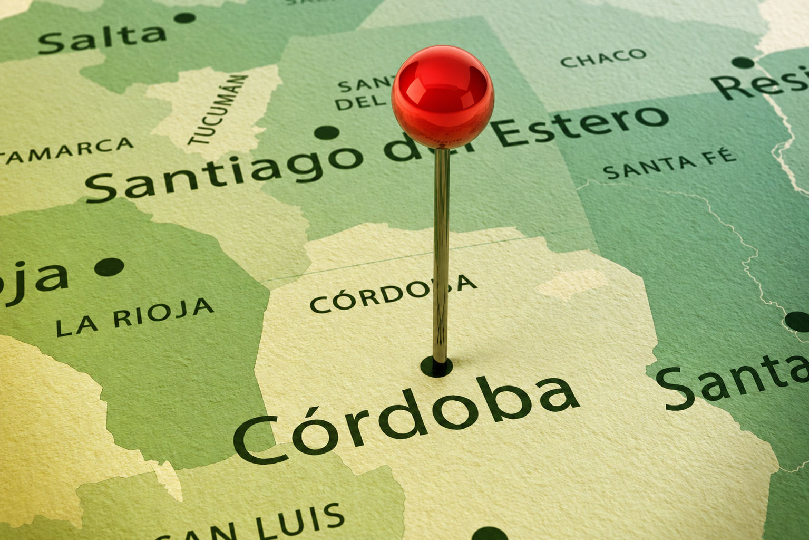
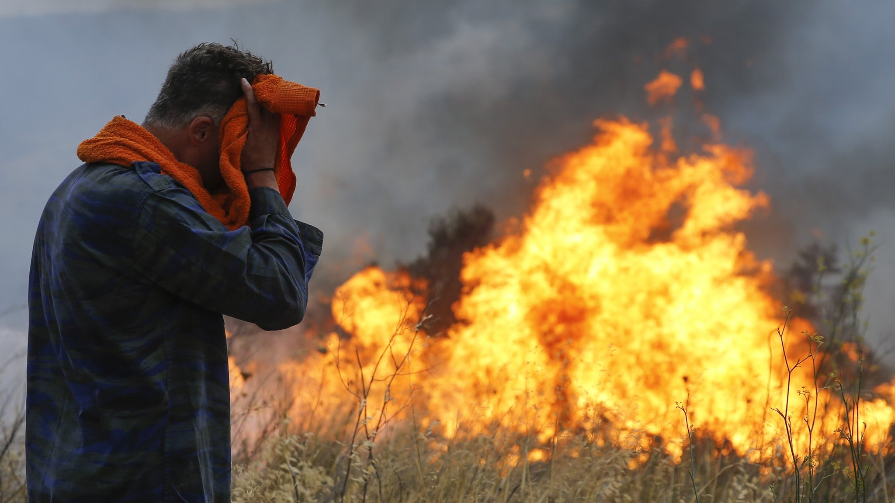
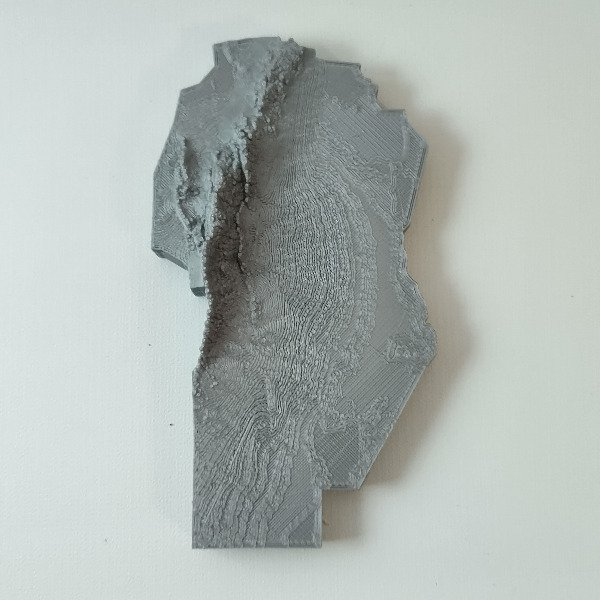
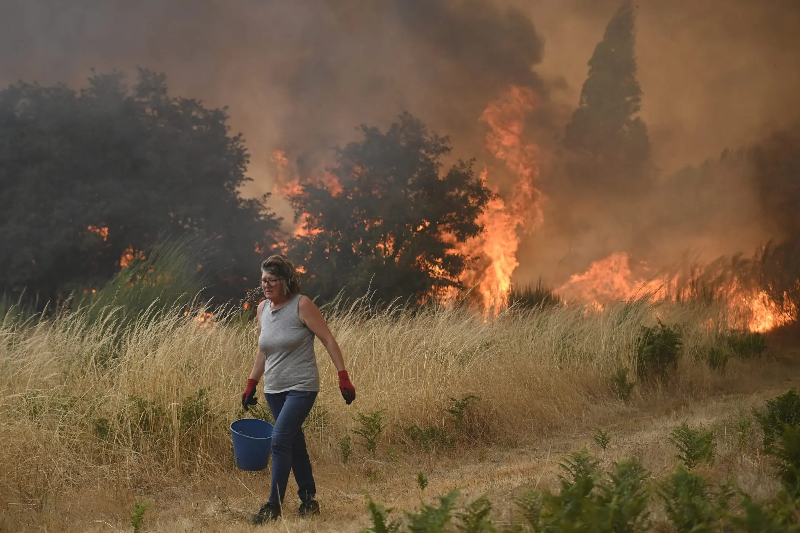
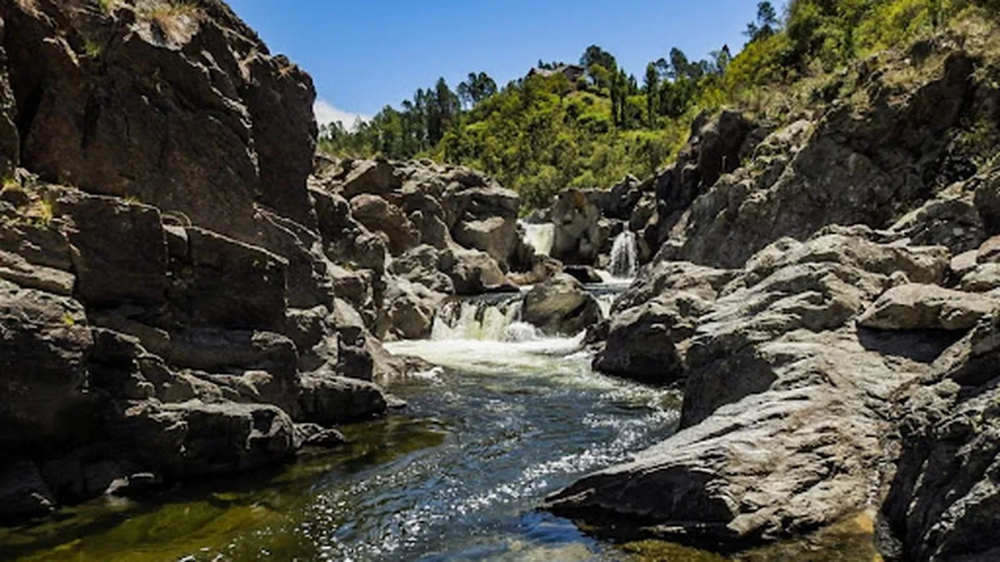

La realidad de los incendios en las sierras.
Experiencia de nuestros bomberos.
El combate de incendios forestales.
Los incendios forestales son eventos de alta destrucción que afectan bosques nativos, fauna, suelo y comunidades enteras de las Sierras de Córdoba.
Córdoba perdio alrededor del 54% de los bosques nativos por los incendios forestales. Cada incendio destruye ecosistemas que tardan décadas en recuperarse y afecta el agua, el aire y la biodiversidad.
Una herramienta educativa para instituciones, docentes y comunidades. Su objetivo es informar, prevenir y orientar — no reemplazar a bomberos ni organismos oficiales.
Una estudiante del ITAI comparte su formación como bombero voluntario y su compromiso con el ambiente.
Los bosques nativos de las Sierras de Córdoba cumplen un rol fundamental para el equilibrio del ambiente y la calidad de vida de las comunidades. Regulan el ciclo del agua, protegen los suelos de la erosión y albergan una gran diversidad de especies animales y vegetales únicas de la región.
Cuando un incendio arrasa estas áreas, no solo se pierde la vegetación visible: el suelo queda expuesto, los cursos de agua se ven afectados y la fauna pierde su hábitat. Sin embargo, un ecosistema quemado no está muerto — las raíces permanecen activas bajo la superficie y la mayoría de las plantas nativas rebrota con fuerza si se le dan las condiciones para recuperarse.
Por eso, proteger y conocer estos ambientes es el primer paso para defenderlos.

El 95% de los incendios forestales son provocados por la mano del hombre. Los casos más frecuentes son fogatas y colillas mal apagadas, el abandono de tierras y la quema de pastizales para preparar áreas de pastoreo. A esto se suman factores que agravan la propagación: falta de precipitaciones, temperaturas elevadas y vientos fuertes.
Los datos oficiales de 2025 confirman la magnitud del problema: se registraron 675 incendios en Córdoba, que afectaron 21.183 hectáreas. El período más crítico fue entre julio y octubre, con 512 incendios y más de 18.000 hectáreas afectadas. Octubre concentró el 48,4% de toda la superficie quemada del año.
Entre los eventos más graves se destacó el incendio en el Parque Nacional Quebrada del Condorito, que arrasó aproximadamente 6.350 hectáreas. Los departamentos más afectados fueron San Justo (4.650 ha), San Alberto (3.202 ha) y Punilla (3.013 ha).
Fuente: Informe Anual de Áreas Afectadas por Incendios — Mesa Técnica de Áreas Quemadas, febrero 2026.

Las condiciones climáticas juegan un papel clave en la propagación de los incendios. Las temporadas de sequía prolongadas, combinadas con altas temperaturas y vientos fuertes, convierten el monte en combustible fácil de encender.
En Argentina, el riesgo varía según la región y la época del año. Entre diciembre y marzo, las provincias del sur tienen riesgo elevado. Desde octubre hasta marzo, Entre Ríos, Corrientes, Misiones, Chaco y Buenos Aires son las zonas con mayor peligro. En las Sierras de Córdoba, el verano seco es el período más crítico.

Los incendios forestales generan un impacto profundo sobre el ambiente y las comunidades. La pérdida de vegetación deja el suelo expuesto a la erosión, altera los cursos de agua y destruye el hábitat de cientos de especies animales y vegetales.
Las plantas exóticas invasoras suelen recuperarse más rápido que las nativas, lo que dificulta la restauración natural del ecosistema. Además, el ganado que pisa el suelo sin vegetación agrava aún más el daño, degradando grandes cantidades de tierra.
A nivel social, los incendios afectan la calidad del aire, ponen en riesgo viviendas y comunidades, y generan pérdidas económicas difíciles de recuperar.

La prevención es la herramienta más poderosa contra los incendios forestales. Pequeñas acciones cotidianas pueden marcar una gran diferencia:
Para quienes viven en zonas de riesgo: mantené el pasto corto, no apilés ramas cerca de la vivienda y construí una franja de al menos 3 metros sin vegetación alrededor de tu casa.

Fotografías de David Oviedo · Brigadista Forestal
En caso de incendio, llamá de inmediato
-100- (bomberos de cordoba)
-103- (defensa civil)
-911- (emergencias)
Bomberos Voluntarios · Córdoba